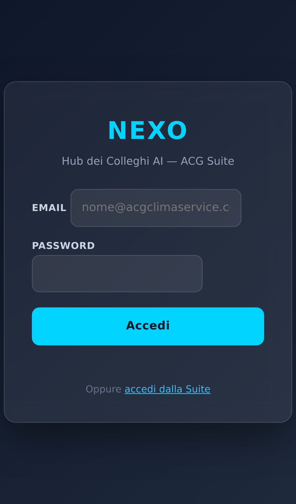
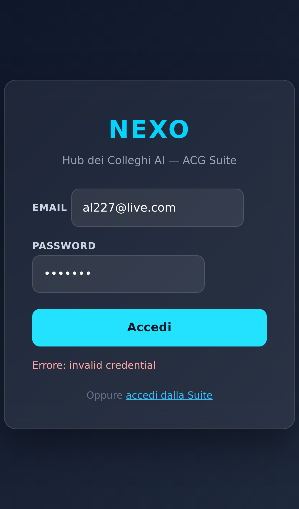
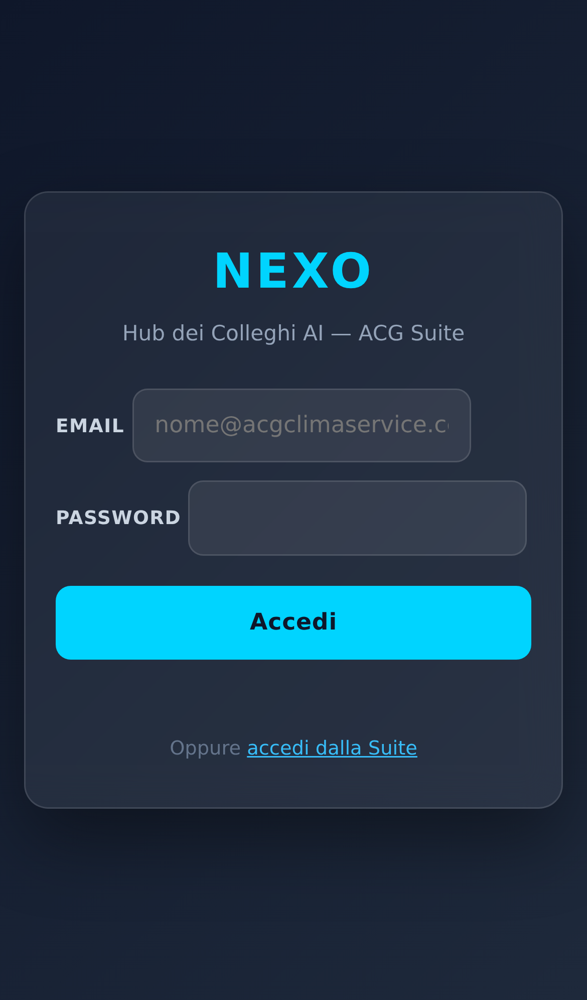
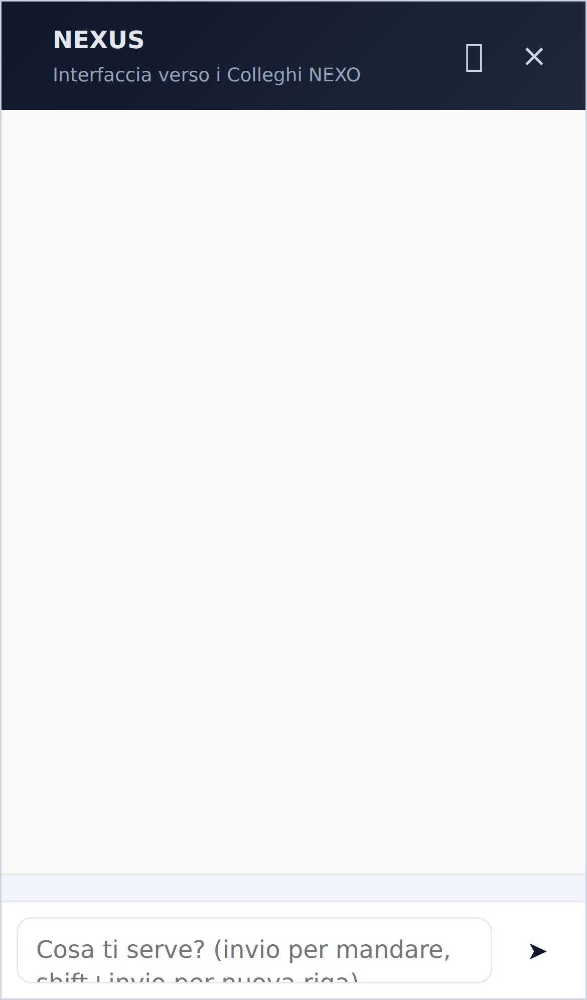
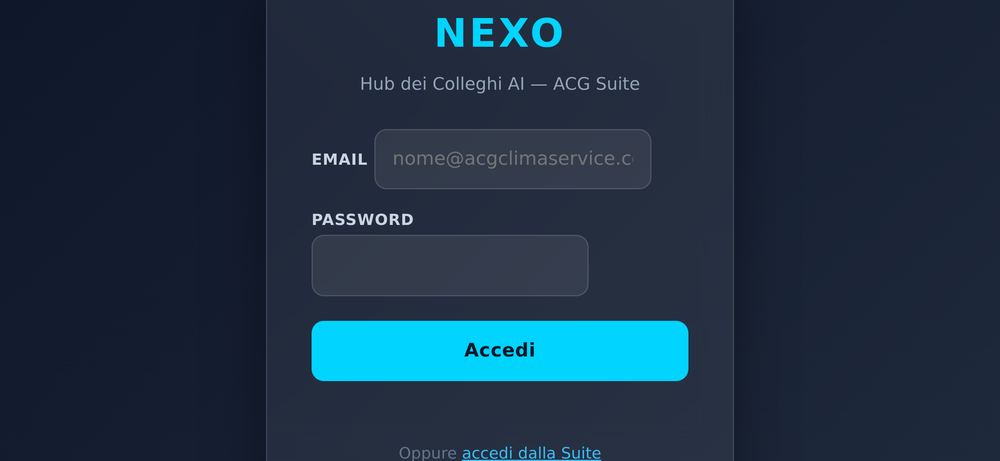
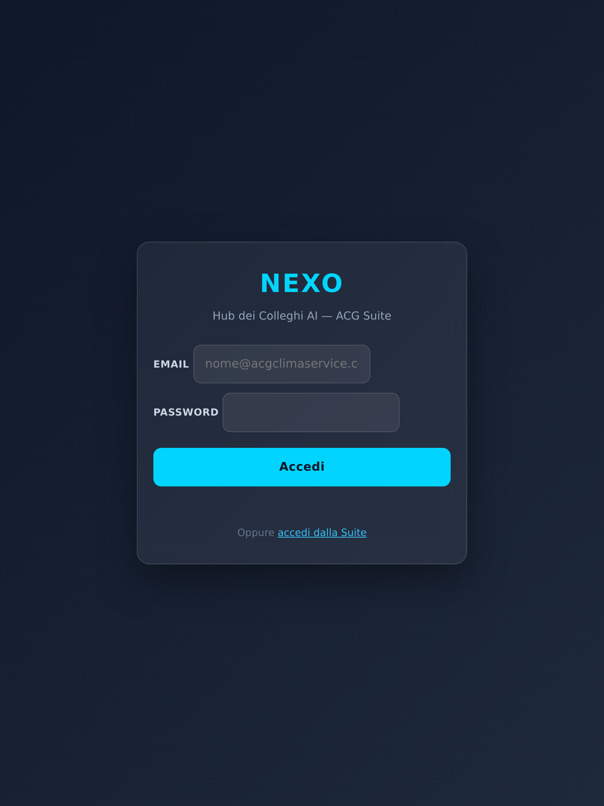
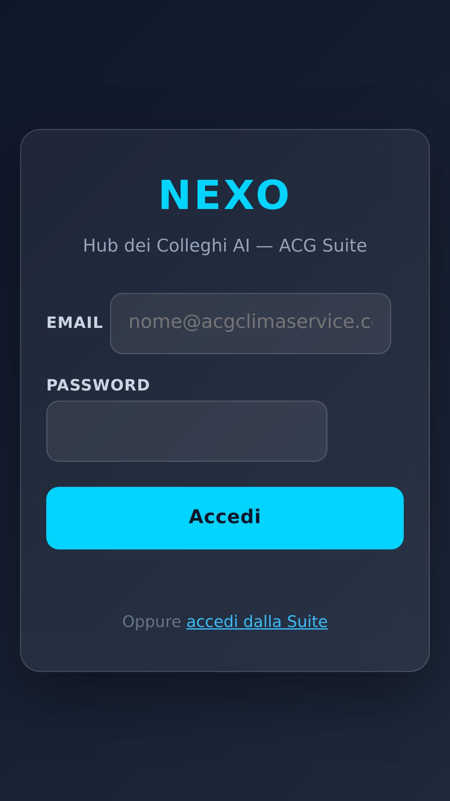

repeat(auto-fit, minmax(320px, 1fr)) → 1fr su mobile.100vw × 100dvh (dynamic viewport, evita che la tastiera iOS copra l'input).position: sticky; bottom: 0 + padding-bottom: env(safe-area-inset-bottom) (no-notch iPhone).::after per dimming.hover: none).bottom: calc(16px + env(safe-area-inset-bottom, 0)).flex-wrap: wrap per evitare overflow.overflow-x: auto + min-width 420px per scroll orizzontale.| Selettore | Dimensione | Stato |
|---|---|---|
#nexusPanel (aperto) | 390 × 664 (fullscreen) | ✓ position: fixed, top/left 0 |
#nexusFab | 54 × 54 | ✓ touch target OK |
#menuBtn | 44 × 45 | ✓ touch target 44+ |
#sidebar.collapsed | display: none | ✓ overlay mobile |
.topbar (mobile) | 390 × 46 | ✓ visibile con hamburger |
meta viewport | presente | ✓ width=device-width |







Non è stato possibile testare le pagine interne dei Colleghi (IRIS, CHRONOS, PHARO) perché richiedono login e le credenziali di test non sono valide. I fix responsive applicati sono però stati verificati:
.chronos-grid, .pharo-grid, .dash-grid, .widget, .nexus-panel).Per test completi post-login Alberto può aprire nexo-hub-15f2d.web.app dallo smartphone dopo login.